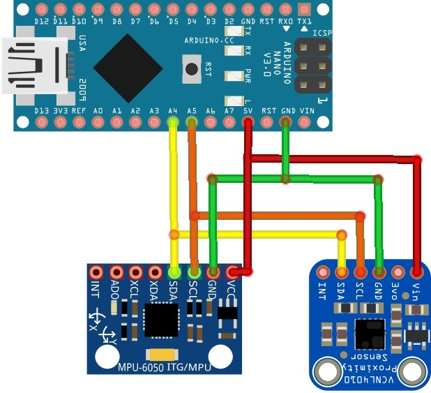

User Guide: IMU & Infrared Proximity Sensors
Measurement of acceleration, gyroscopic data, vertical proximity and temperature.
GitHub Repository
Prerequisites
Hardware
- 1 x Arduino Nano
- 1 x 6 degrees-of-freedom inertial measurement unit (IMU) sensor (model: MPU6050)
- 1 x Infrared (IR) proximity & temperature sensor (model: Adafruit VCNL4010)
Software
Setup
Hardware
Wire up the Arduino Nano, IMU and IR according to the diagram below:

Usage
This program runs both sensors sharing the same I2C bus. Output format is a string containing acceleration, gyro, proximity and temperature.
- Upload the program
IMU_PROX.ino to Arduino Nano via Arduino IDE.
- Open the Serial Monitor on Arduino IDE to read data.